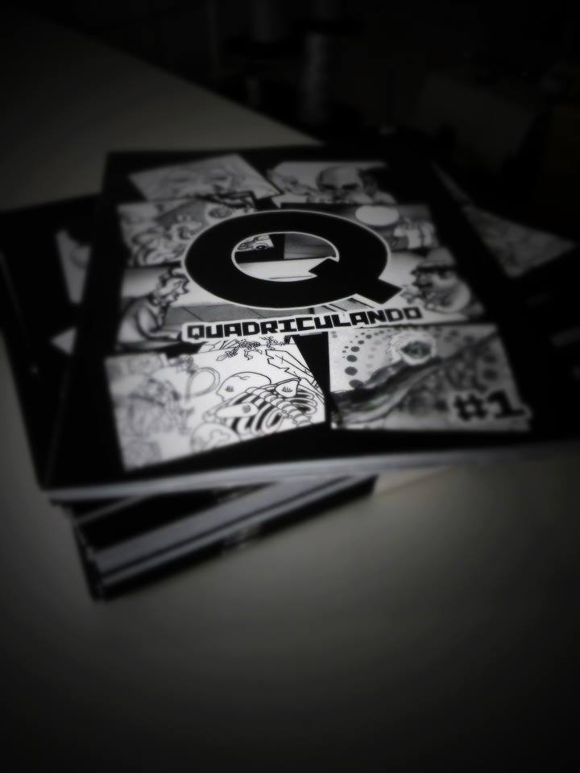

Sobre o Quadriculando
O Selo/Coletivo Quadriculando é um projeto de publicação de quadrinhos independentes e um impulso para novos artistas e autores.
Criado no ano de 2015 por alunos e ex-alunos da Escola Oficina, tem como principal finalidade contar histórias sob a linguagem de histórias em quadrinhos, de qualquer gênero artístico ou narrativo.Com a criação do projeto, foi idealizada a mini-revista Quadriculando que teve sua primeira edição publicada em Outubro de 2015.
A mini-revista teve um grande sucesso, tendo todas suas cópias vendidas em eventos como SANTOS COMIC EXPO e FIQ. Atualmente, os integrantes estão no processo de criação do QUADRICULANDO - Nº 2 que tem previsão de lançamento para 2016.
Rua Doutor Luiz Suplicy 7 (Santos, SP).
(13) 3232-8787